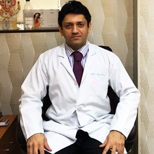
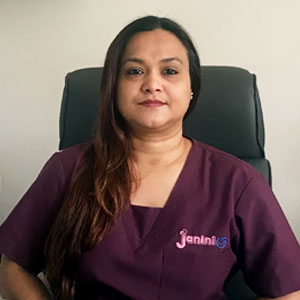

Full-service fertility clinic, Paschim Vihar, New Delhi — every operational surface on one dedicated IVFComputer instance
Janini IVF in Paschim Vihar, New Delhi is a full-service fertility clinic led by Dr. Rutvij Dalal, an award-winning IVF specialist, and Dr. Akanksha Mishra, a senior fertility specialist and embryologist. The clinic offers the complete ART spectrum — IVF, ICSI, IUI, fertility preservation, and male infertility care.
Like most Indian fertility clinics, Janini's patients live on WhatsApp: enquiries, follow-ups, medication questions at 11 PM. Running that relationship across leads, cycles, the embryology lab, consent paperwork, and billing meant a stack of disconnected tools — until it all moved to one dedicated IVFComputer instance.


Every WhatsApp message into Janini is triaged by AI into one of 16 clinical intents and routed to the right clinician with the patient's cycle context loaded. Leads carry the treatment they're enquiring about — IVF, IUI, or male infertility — from the first message to registration.
In the lab, LabOS runs blast grading, the cryo register, and a double-witness audit trail. Semen analysis follows WHO-2021 reference ranges with TMSC calculated automatically. ART Act 2021 consent forms go out as WhatsApp links, pre-filled by AI, signed by patient, partner, and doctor — and BillingOS ties every invoice to the cycle stage it belongs to.
An operating system that doesn't depend on any one person remembering to do anything — running a real clinic, today, at janini.ivfcomputer.com.— The IVFComputer × Janini IVF deployment
Join fertility centers already running on IVFComputer.